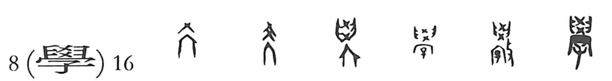

Explanation
学 abbreviates 學. Its oldest formation represents a school building whose roof bears crossed timbers, 爻. The roofed space is the place where the clan's young people receive instruction.
A pair of hands, 𦥑, is added around the upper part to express teaching and guiding. 子 then identifies the child who learns there. The fuller formation gathers the institution, the act of instruction, and its young recipient into one shape. Other early variants add a striking hand to mark the teaching action.
The related writings develop uses for both teaching and learning. 學 becomes receiving instruction, the knowledge acquired through it, and the place devoted to that activity. The closeness of teaching and learning survives in the classical idea that each helps advance the other.